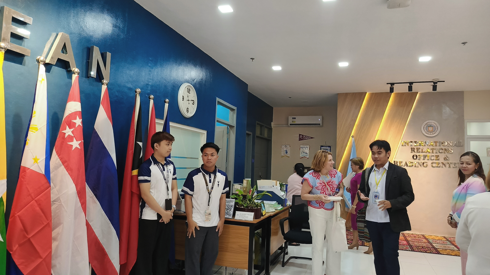
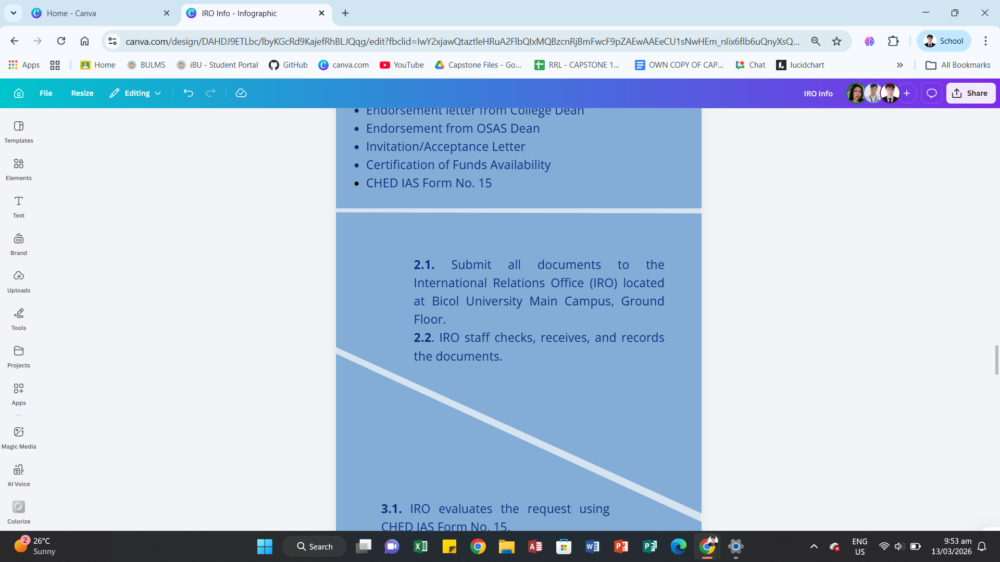
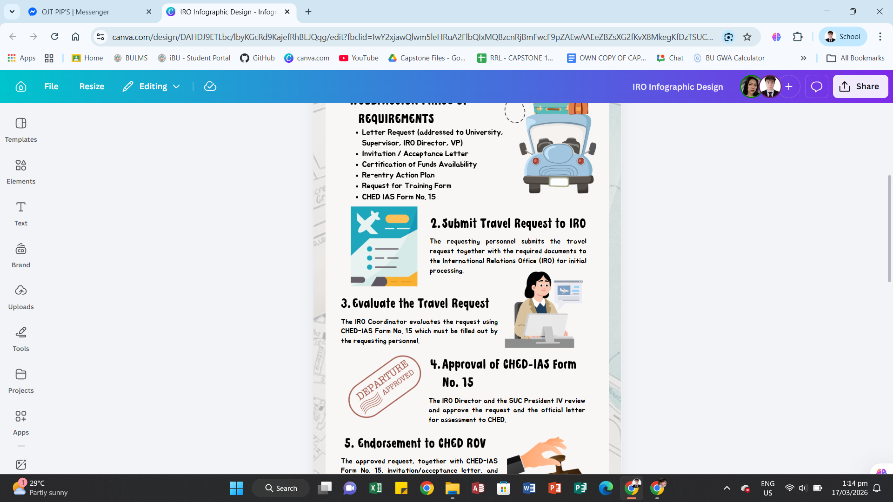
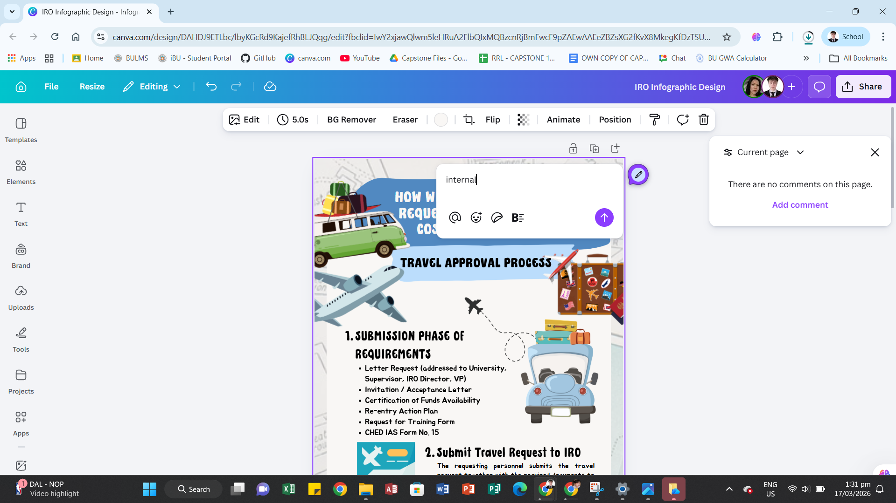
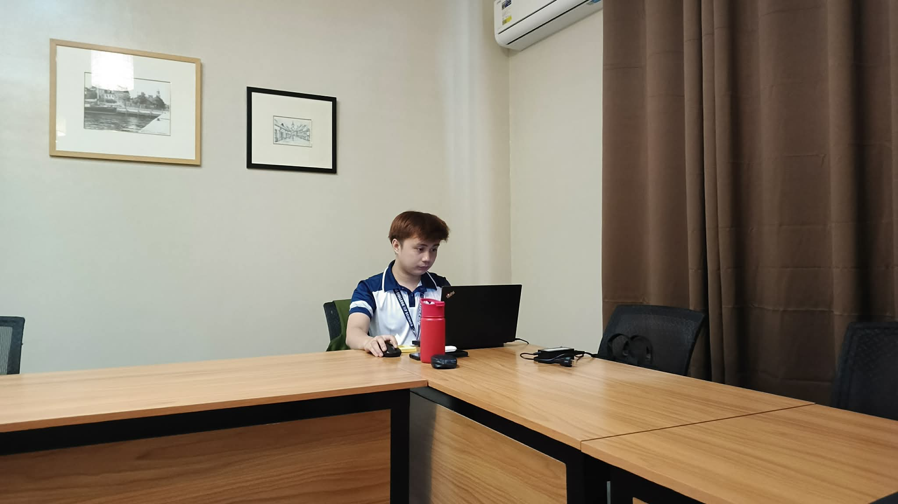
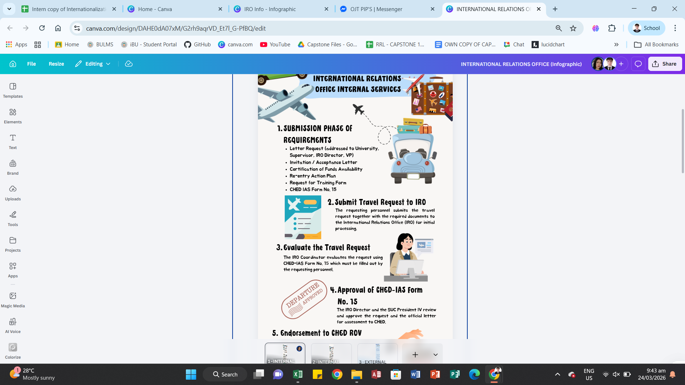
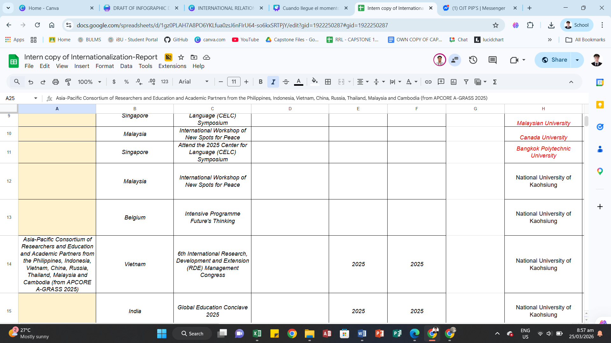
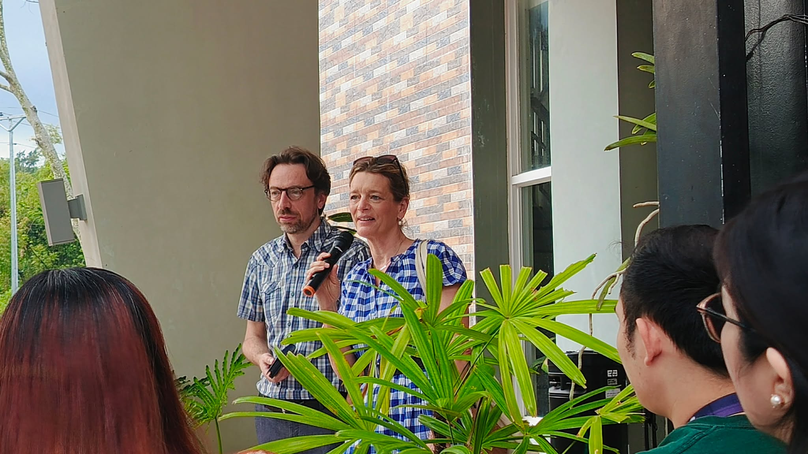
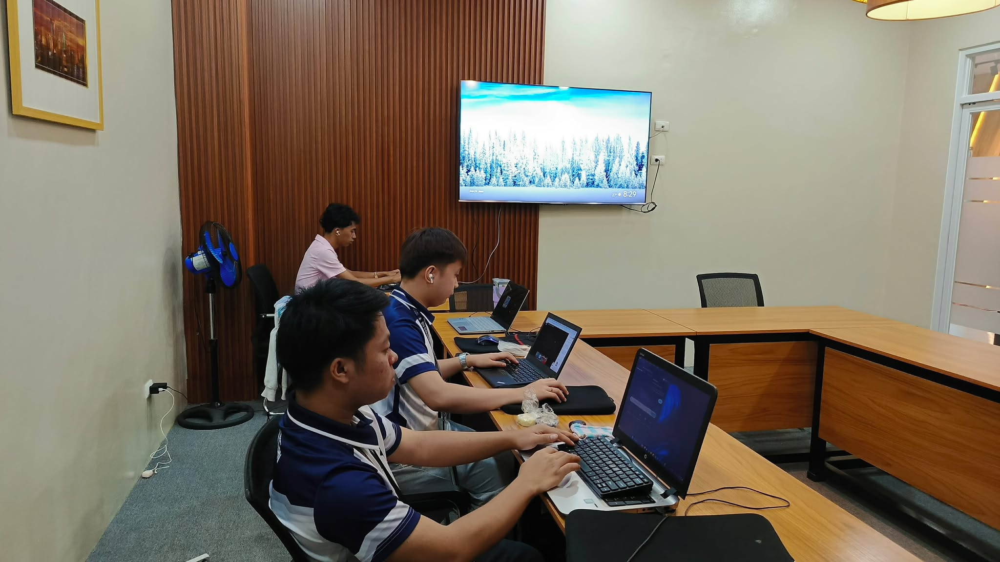
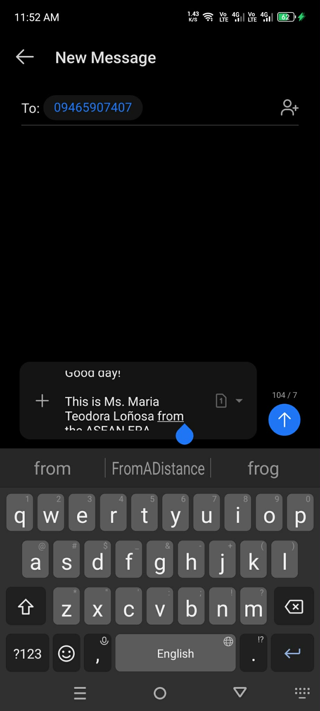

First Week - February 23-27, 2026
This week, we helped move files to the new office and started fixing the names on the certificates. On Tuesday and Wednesday, we shifted to sending client satisfaction emails and drafting the messages for the ASEAN International Conference certificates. By Thursday, we continued sending draft emails and renamed the uploaded pictures in Google Drive for the ASEAN participants. Finally, on Friday, we finished naming the certificates and uploaded the NUVANCE Team images to the Drive.


Second Week - March 02-06, 2026


Several activities were completed in relation to the preparation of an infographic. An infographics meeting was first conducted to discuss the design, layout, and content of the infographic. After the meeting, the drafting and designing of the infographic started and continued in the following days to further improve its layout and presentation. During this time, a paper was also delivered to the OP for signature and later submitted to the OSAS, including the Dean and Admin Offices, for the required signatures. A conference room meeting was also attended to discuss updates and other related matters. The drafted infographic was later checked and reviewed with Ma'am Abby to ensure that the design and information were accurate. After the review, additional information was gathered to be included in the infographic to complete the content.
Third Week - March 09-13, 2026
From March 9 to March 13, 2026, I did several office-related tasks and provided assistance during an event. On March 9 and March 10, I delivered documents to the Office of the Vice President (OVP) for signature. On March 10, I also assisted during a YMCA event by helping serve participants and cleaning the area after the event. On March 12, I retrieved several items from the old International Relations Office (IRO) and transferred them to the new office located in the library.



Fourth Week - March 16-20, 2026



For week 4, together with my co-interns, we checked the routers in our office, the IRO. After that, we continued editing the infographics. We made sure the information was clear and easy to understand. We also fixed some errors and improved the design to make it more presentable. Some of these tasks were also done while working from home, where we continued our assigned work and communicated online. In addition, we worked as a team to complete our tasks on time. We helped each other when there were problems, especially with the layout and content of the infographics. Even while working from home, we stayed connected and updated each other about our progress. This experience helped us improve our communication and teamwork skills. It also allowed us to learn more about organizing information and creating simple but effective designs.
Fifth Week - March 23-27, 2026
From March 23 to March 26, 2026, I worked on editing the International Report and made steady progress each day. On March 23, I also helped assist foreign visitors in the office. The next day, March 24, I continued editing the report and helped set up the conference room for law students. On March 25, I continued editing the report and also worked on drafting infographics. On March 26 and 27, while working from home, I focused on continuing the editing of the International Report.


Sixth Week - March 30 - April 2, 2026



During my sixth week, from March 30 to April 2, 2026, I was involved in both technical and communication tasks. On March 30, I conducted trial and error testing for a Zoom meeting in preparation for live streaming and received documents from the Old CAL. On March 31, I assisted with technical tasks during the live stream and helped clean the office. On April 2, while working from home, I sent messages to ASEAN ERA participants to remind them about the requirements for reimbursement, such as submitting their Certificate of Appearance and Training Needs Survey Form, and to provide contact details for any questions or clarifications.